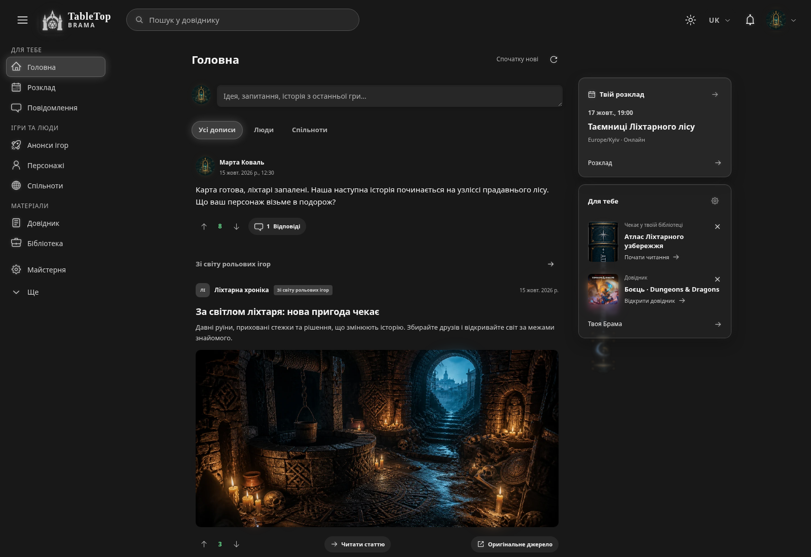
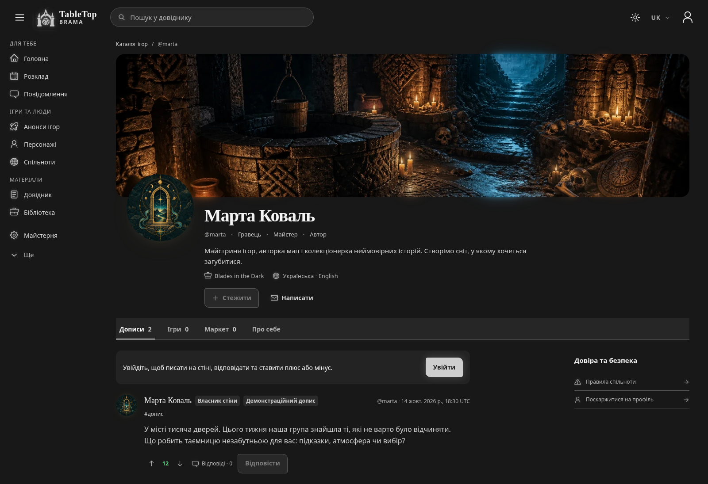
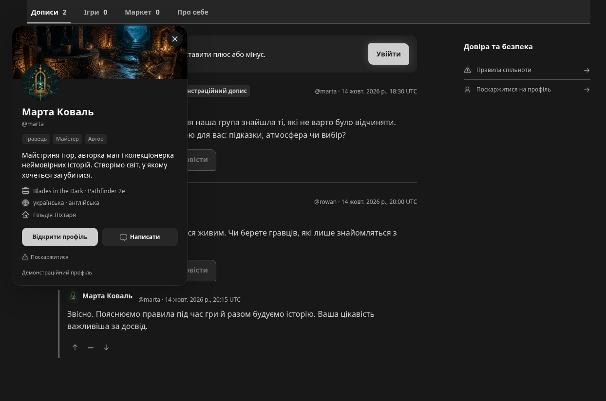
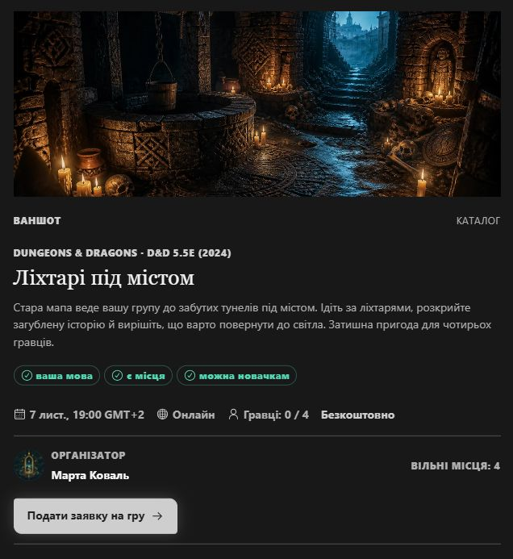
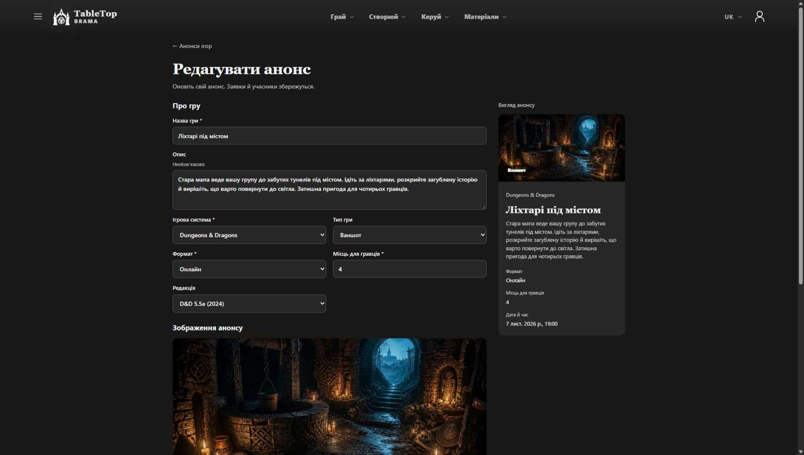
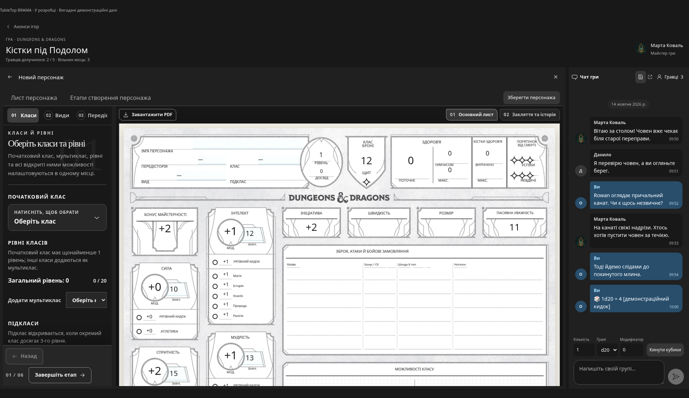
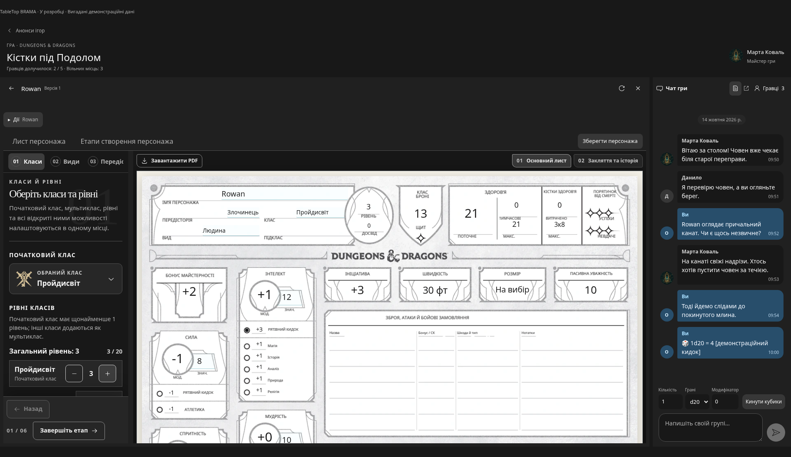
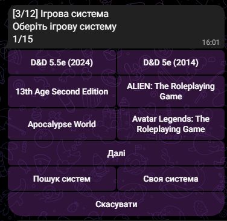
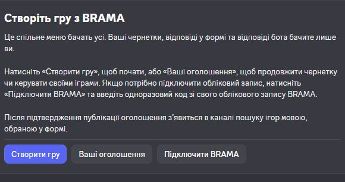

Що змінилося
Я оновив дизайн і профілі TableTop BRAMA. Зараз допрацьовую оголошення про ігри, ігровий простір і ботів Telegram/Discord для цих оголошень.
Тепер можна відкрити картку профілю: натисніть ім’я або аватар у коментарях, щоб побачити профіль, ролі, опис і посилання людини, не залишаючи сторінку. Завантаження аватарів та обкладинок також оптимізовано зі збереженням анімації.
Що зараз допрацьовую:
- Оголошення про ігри: редагування без втрати заявок, зрозуміліший вибір системи й редакції та дати: точна дата, діапазон або за домовленістю. У спільному каталозі для оголошень є окремі записи D&D 2024 та 2014.
- Ігровий простір: створення персонажа або під’єднання наявного з бібліотеки, аркуш поруч із чатом і перевірки з аркуша у спільному чаті. Допрацьовую те, як ці кроки поєднуються.
- Боти для оголошень: зв’язок сценаріїв Telegram і Discord із BRAMA, зокрема приватна форма Discord, збережений вибір мови інтерфейсу й відповідні мовні канали. Робота над інтерфейсами ботів охоплює українську, англійську, польську, чеську й іспанську.
BRAMA ще в розробці, сайт поки не публічний. На скриншотах — вигадані демонстраційні профілі й контент.
Скриншоти
- Оновлений дизайн BRAMA
- Демонстраційний профіль
- Картка профілю в обговоренні
- Оголошення про гру
- Редактор оголошення
- Створення персонажа всередині гри
- Аркуш персонажа поруч із чатом групи
- Створення оголошення в Telegram
- Інструменти оголошень у Discord
Оновлений дизайн BRAMA
Оновлений дизайн BRAMA: стрічка, навігація й медіа в єдиному просторі.

Демонстраційний профіль
Оновлений профіль з обкладинкою, аватаром, ролями й особистою стіною.

Картка профілю в обговоренні
Натисніть на ім’я або аватар, щоб переглянути картку профілю, не залишаючи обговорення.

Оголошення про гру
Ілюстроване оголошення із системою, редакцією, часом, вільними місцями й кнопкою подання заявки. Вигадана демонстраційна гра.

Редактор оголошення
Редагування демонстраційного оголошення: система, редакція, кількість гравців і попередній перегляд. Цей сценарій ще допрацьовується.

Створення персонажа всередині гри
Створення персонажа D&D: аркуш залишається поруч із налаштуваннями та чатом гри. Демонстрація розробки.

Аркуш персонажа поруч із чатом групи
Редагування персонажа D&D безпосередньо у грі. Аркуш і розмова групи поруч. Вигадані демонстраційні дані.

Створення оголошення в Telegram
Вибір системи в боті Telegram: окремі записи D&D 2024 та 2014, пошук і можливість додати свою систему.

Інструменти оголошень у Discord
Меню бота Discord для створення ігор, продовження чернеток і підключення BRAMA. Відповіді у формі й відповіді бота бачить лише користувач цього сценарію.
